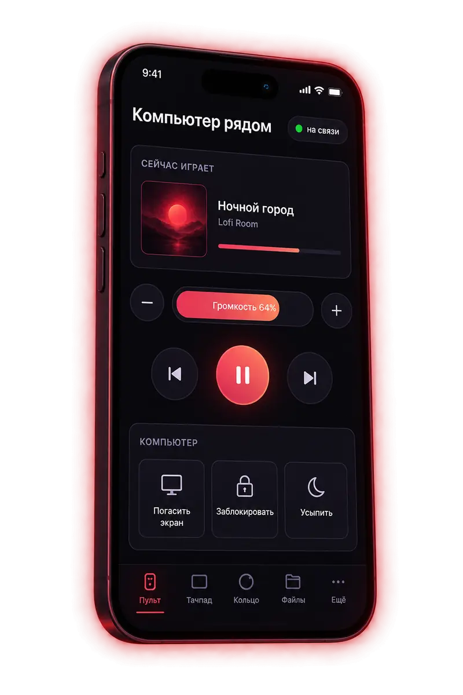

Что умеет
Нажмите на любой пункт, чтобы узнать подробнее. Всё прячется у краёв и в углах экрана и появляется, только когда вы туда ведёте мышь.
Почему это удобно
Программа работает всё время, поэтому сделана так, чтобы её не было заметно - ни по скорости, ни по памяти.
- Не мешает играм. Когда вы запускаете игру, программа сама затихает и убирает всё лишнее. После игры всё возвращается.
- Не просит прав администратора для обычной работы. Если какой-то функции они нужны, Windows спросит один раз.
- Ничего не удаляет без спроса. Чистка, удаление и закрытие программ - только по вашей кнопке. Удалённое уходит в Корзину.
- Всё можно вернуть. Любую настройку Windows, которую поменяла программа, можно откатить. В меню значка в трее есть пункт «Вернуть всё как было».
Как начать
Займёт пять минут. Ничего настраивать заранее не нужно.
Скачайте и установите
Скачайте установщик со страницы загрузок и запустите его.
Для программистов: собрать самому
Нужен MSYS2 с пакетами ucrt64:
g++,cmake,ninja. В папке проекта:build.cmd
Найдите значок в трее
Окна у программы нет: она работает тихо, а её значок появится справа внизу, возле часов. Для начала в кольцах уже лежат ваши Документы, Загрузки, Музыка и Изображения.
Откройте кольцо
Зажмите Alt и доведите мышь до левого или правого края экрана. Наведите на папку - рядом покажется, что в ней. Щёлкните дважды, чтобы открыть.
Добавьте своё
Дважды щёлкните по значку в трее - откроются настройки. В разделе «Кольца» перетащите туда нужные папки и программы, там же выберите цветовую тему.
Включите запуск вместе с Windows
Правый щелчок по значку в трее - «Запускать вместе с Windows». Теперь кольцо будет под рукой всегда.
Шпаргалка
| Alt + мышь к краю экрана | открыть кольцо |
| двойной щелчок | открыть папку, файл или программу |
| правый щелчок по папке | заглянуть внутрь, не выходя из кольца |
| начать печатать | найти по названию - даже в неправильной раскладке |
| перетащить файл к краю с Alt | положить файл в папку из кольца |
| Alt + Ё | кольцо всех открытых окон |
| Esc | назад или закрыть |
Для программистов: ещё сочетания
Shift + открыть - папка в VS Code, Ctrl + открыть - терминал в этой папке, Ctrl + Shift + открыть - показать в Проводнике.
Телефон рядом
Фото, файлы и текст между телефоном и компьютером - без проводов, облака и регистрации. Нужно только, чтобы оба были в одном Wi-Fi.
Покажите QR-код
Откройте в кольце пункт «Телефон» - справа внизу экрана появится QR-код.
Наведите камеру телефона
На телефоне откроется страница: отправить фото и файлы, управлять музыкой, двигать мышь пальцем, печатать на ПК.
Запомните телефон
Нажмите «Запомнить этот телефон» - в следующий раз QR не понадобится. На Android есть ещё и приложение: оно показывает на ПК уведомления и коды из SMS.
